MP Police Constable - every diagram beside the question it is attached to
2023-08-23-s1 MP_Police_Constable_2023_Shift-I.xlsx
Q36 General ReasoningFind the number of triangles in the given figure.
इस आकृति में त्रिभुज की संख्या ज्ञात कीजिए।- 5
- 7
- 4
- 6
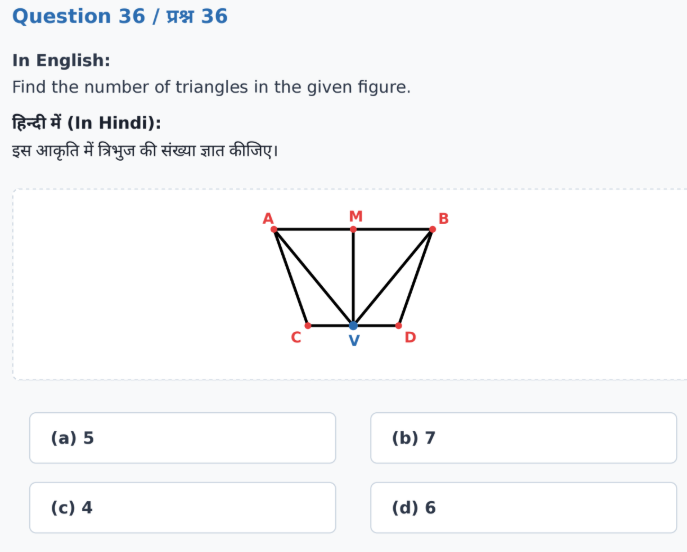
mp-police/2023-08-23-s1/q036-9eb0b203.pngQ37 General ReasoningFind the number of triangles in the given figure.
इस आकृति में त्रिभुज की संख्या ज्ञात कीजिए।- 12
- 11
- 10
- 13
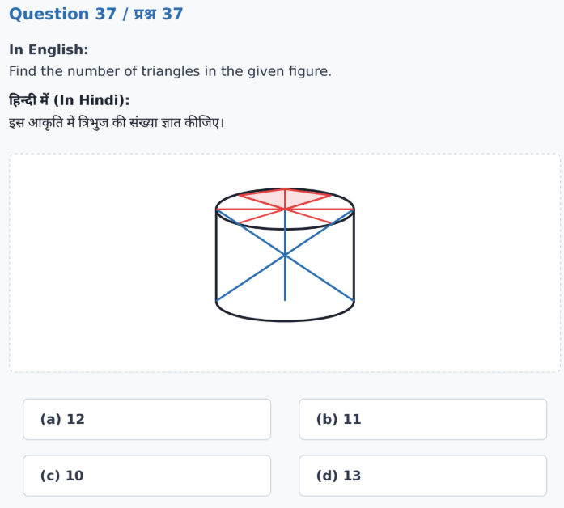
mp-police/2023-08-23-s1/q037-0c32daa5.pngQ38 General ReasoningFind the number of triangles in the given figure.
इस आकृति में त्रिभुज की संख्या ज्ञात कीजिए।- 22
- 21
- 20
- 23
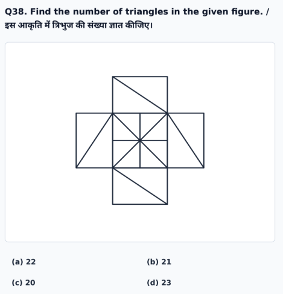
mp-police/2023-08-23-s1/q038-7c7e62a0.pngQ39 General ReasoningFind the number of triangles in the given figure.
इस आकृति में त्रिभुज की संख्या ज्ञात कीजिए।- 16
- 17
- 15
- 19
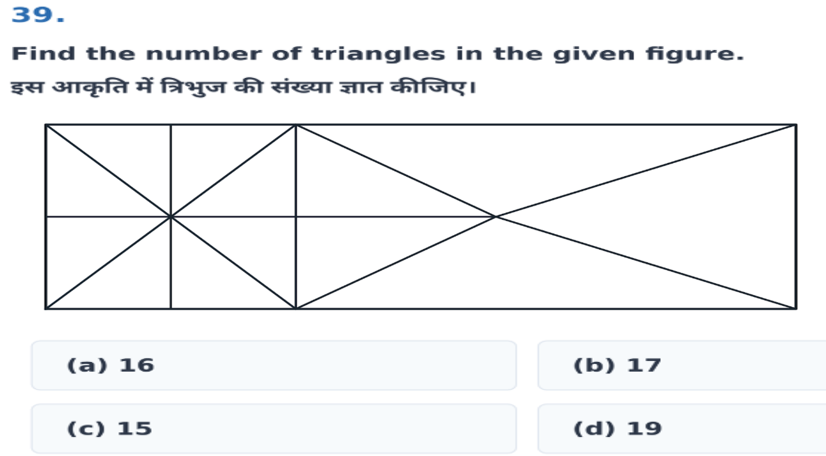
mp-police/2023-08-23-s1/q039-3f6cd788.pngQ43 General ReasoningIn the given figure, Circle represents the pet animals, Square represents the domestic animals. Study the diagram and identify the animals which are both pet and domestic animals.
दी गई आकृति में, वृत्त पालतू जानवरों का प्रतिनिधित्व करता है, वर्ग घरेलू जानवरों का प्रतिनिधित्व करता है। आरेख का अध्ययन करें और उन जानवरों की पहचान करें जो पालतू और घरेलू जानवर दोनों हैं।- A
- B
- C
- A and B
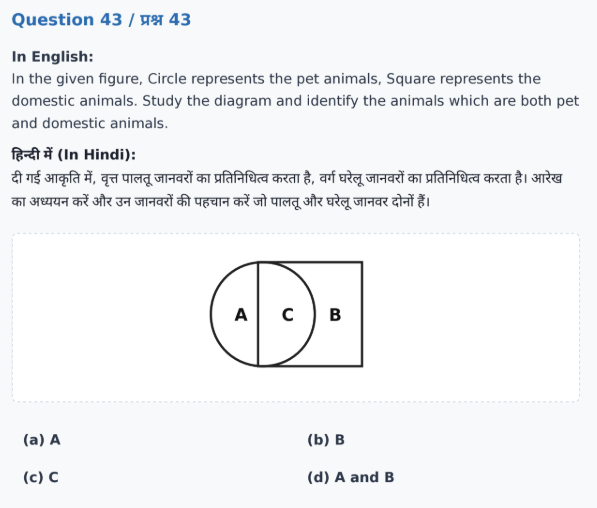
mp-police/2023-08-23-s1/q043-09690b6b.pngQ48 General ReasoningA specific analogy is given in the question below. Understand the logic behind it and choose the correct option for the next part.
नीचे दिए गए प्रश्न में एक विशिष्ट सादृश्य दिया गया है। इसके पीछे के तर्क को समझें और अगले भाग के लिए सही विकल्प चुनें :- (see figure)
- (see figure)
- (see figure)
- (see figure)
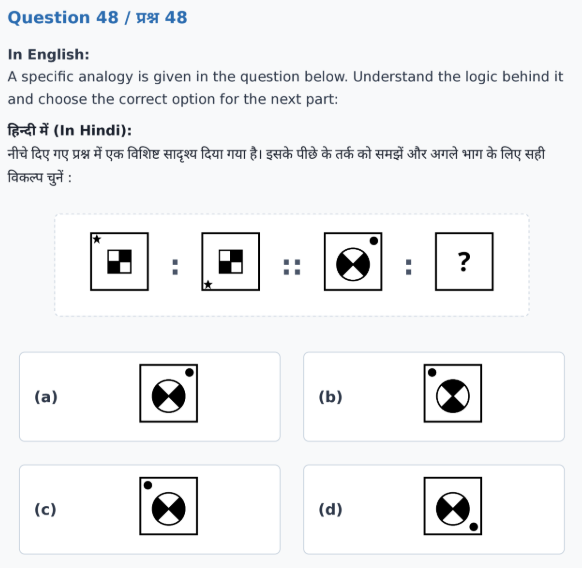
mp-police/2023-08-23-s1/q048-cd65682e.pngQ49 General ReasoningIf the mirror is placed on the line, then which of the answer figure is the right mirror image of the given figure?
यदि एक दर्पण को दर्शाई गई रेखा AB पर रखा जाये, तो दी गई विकल्प आकृतियों में से कौन-सी सही दर्पण छवि होगी?- (see figure)
- (see figure)
- (see figure)
- (see figure)
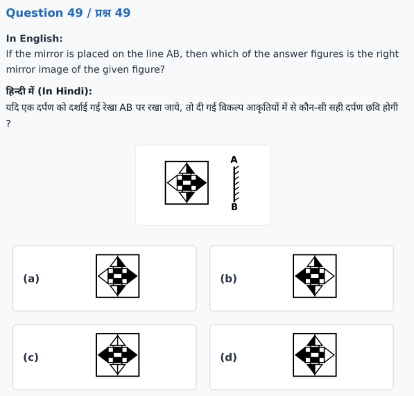
mp-police/2023-08-23-s1/q049-84183d34.png2023-08-23-s2 mp_police_constable_2023_shift2.xlsx
Q36 General ReasoningFind the number of triangles in the given figure.
इस आकृति में त्रिभुज की संख्या ज्ञात कीजिए।- 5
- 6
- 8
- 7
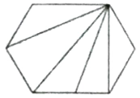
mp-police/2023-08-23-s2/q036-394b87d4.pngQ37 General ReasoningFind the number of triangles in the given figure.
इस आकृति में त्रिभुज की संख्या ज्ञात कीजिए।- 22
- 21
- 20
- 23
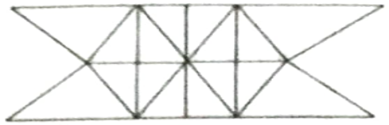
mp-police/2023-08-23-s2/q037-2116e19a.pngQ41 General ReasoningIn the given figure, Triangle represents Boys, Circle represents Dancers, Rectangle represents Actors. Identify the number of persons who are Boys and Dancers but not Actors.
दी गई आकृति में, त्रिभुज लड़कों का प्रतिनिधित्व करता है, वृत्त नर्तकियों का प्रतिनिधित्व करता है, आयत अभिनेताओं का प्रतिनिधित्व करता है। उन व्यक्तियों की संख्या की पहचान करें जो लड़के और नर्तक हैं लेकिन अभिनेता नहीं हैं।- 8
- 7
- 4
- 9
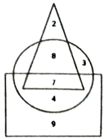
mp-police/2023-08-23-s2/q041-00b45875.pngQ46 General ReasoningA figure analogy is given below. Understand the logic behind it and complete the analogy for the next figure.
एक आकृति सादृश्य नीचे दिया गया है। इसके पीछे के तर्क को समझें और अगली आकृति के लिए सादृश्य को पूर्ण करें।- (see image)
- (see image)
- (see image)
- (see image)
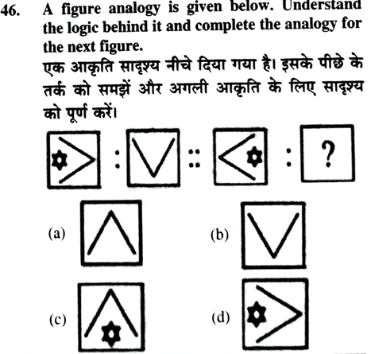
mp-police/2023-08-23-s2/q046-19af3cea.pngQ48 General ReasoningIdentify the class that best represents the Venn diagram (three separate non-overlapping circles).
उस वर्ग की पहचान करें जो वेन-आरेख का सबसे अच्छा प्रतिनिधित्व करता है।- Liquid, Solid, Gas
- Pen, Pencil, Stationery
- Women, girl, student
- Battery, Mobile Battery, Computer Battery
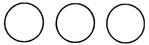
mp-police/2023-08-23-s2/q048-f3903224.pngQ49 General ReasoningHow many triangles are in the given figure? (an envelope-shaped figure)
दी गई आकृतियों में कितने त्रिभुज हैं ?- 10
- 11
- 8
- 9
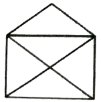
mp-police/2023-08-23-s2/q049-d0a1da70.pngQ50 General ReasoningHow many triangles are in the following figures? (two squares side by side with diagonals)
दी गई आकृतियों में कितने त्रिभुज हैं ?- 15
- 12
- 10
- 13
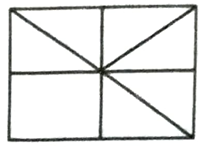
mp-police/2023-08-23-s2/q050-9f63903c.pngQ51 General ReasoningIf the mirror is placed on the line, then which of the answer figure is the right mirror image of the given figure (the letters YZ)?
यदि एक दर्पण को दर्शाई गई रेखा पर रखा जाये, तो दी गई विकल्प आकृतियों में से कौन-सी सही दर्पण छवि होगी ?- (see image)
- (see image)
- (see image)
- (see image)
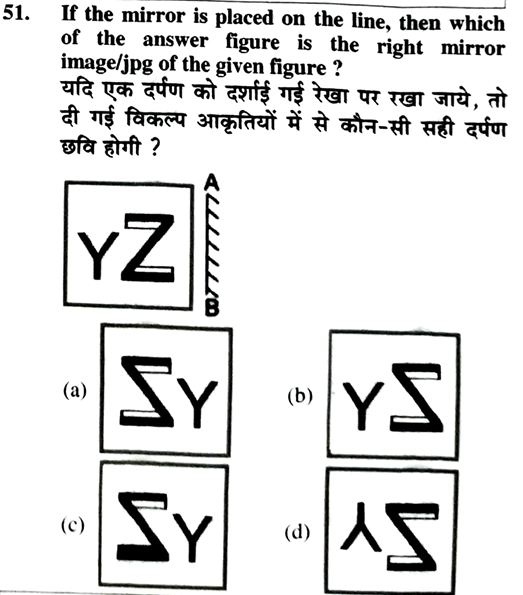
mp-police/2023-08-23-s2/q051-c5821151.png2023-08-23-s3 exam.xlsx
Q36 General ReasoningFind the number of triangles in the given figure. (A circle containing a square with both diagonals drawn.)
इस आकृति में त्रिभुज की संख्या ज्ञात कीजिए।- 7
- 8
- 6
- 9
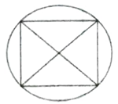
mp-police/2023-08-23-s3/q036-1fb758dd.pngQ37 General ReasoningFind the number of triangles in the given figure. (A hexagon with internal lines forming triangles.)
इस आकृति में त्रिभुज की संख्या ज्ञात कीजिए।- 8
- 7
- 5
- 9
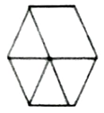
mp-police/2023-08-23-s3/q037-5708feeb.pngQ40 General ReasoningThe given diagram represents the person who are Teacher, Singer and Mother. Study the diagram and identify the person who are teacher as well as the singer and mother also.
दिया गया चित्र उस व्यक्ति का प्रतिनिधित्व करता है जो शिक्षक, गायिका और माँ है। आरेख का अध्ययन करें और उस व्यक्ति की पहचान करें जो शिक्षक होने के साथ-साथ गायिका और माँ भी है।- R
- M
- P
- X
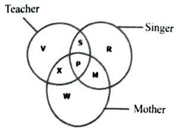
mp-police/2023-08-23-s3/q040-46edcb15.pngQ46 General ReasoningA figure analogy is given below. Understand the logic behind it and complete the analogy for the next figure.
एक आकृति सादृश्य नीचे दिया गया है। इसके पीछे के तर्क को समझें और अगली आकृति के लिए सादृश्य को पूर्ण करें।- Option (a)
- Option (b)
- Option (c)
- Option (d)
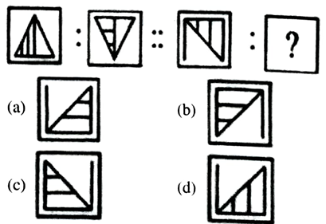
mp-police/2023-08-23-s3/q046-6cb17c6b.pngQ49 General ReasoningIdentify the class that best represents the Venn-diagram.
उस वर्ग की पहचान करें जो वेन-आरेख का सबसे अच्छा प्रतिनिधित्व करता है।- Animals, tiger, car
- Delhi, Sri Lanka, Asia
- Atmosphere, Hydrosphere, Biosphere
- Males, fathers, children
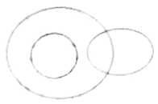
mp-police/2023-08-23-s3/q049-534386df.pngQ50 General ReasoningFind the number of rectangles in the following figure. (A rectangle divided into a grid with diagonal lines.)
दी हुई आकृति में आयतों की संख्या ज्ञात कीजिये।- 10
- 12
- 11
- 13
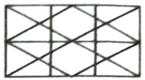
mp-police/2023-08-23-s3/q050-47f5b977.pngQ51 General ReasoningHow many triangles are in the given figures?
दी गई आकृतियों में कितने त्रिभुज हैं ?- 12
- 13
- 15
- 14
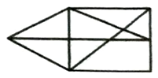
mp-police/2023-08-23-s3/q051-6d0e611a.pngQ52 General ReasoningIf the mirror is placed on the line, then which of the answer figure is the right mirror image of the given figure?
यदि एक दर्पण को दर्शाई गई रेखा पर रखा जाये, तो दी गई विकल्प आकृतियों में से कौन-सी सही दर्पण छवि होगी ?- Option (a)
- Option (b)
- Option (c)
- Option (d)
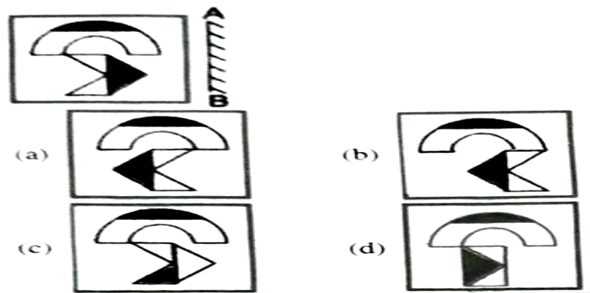
mp-police/2023-08-23-s3/q052-523877f4.png2023-08-24-s2 questions.xlsx
Q36 Mental AbilityFind the number of triangles in the given figure.
इस आकृति में त्रिभुजों की संख्या ज्ञात कीजिए।- 8
- 9
- 7
- 10
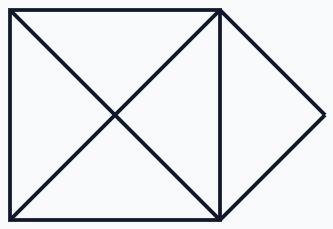
mp-police/2023-08-24-s2/q036-42f5588f.pngQ37 Mental AbilityFind the number of triangles in the given figure.
इस आकृति में त्रिभुजों की संख्या ज्ञात कीजिए।- 18
- 17
- 15
- 14
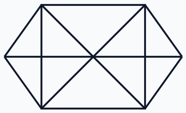
mp-police/2023-08-24-s2/q037-c7bdfd42.pngQ40 Mental AbilityIn the given figure, Circle represents the Women, Triangle represents the persons who work in a showroom and square represents the persons who work in a School. Find out the number of Women who are unemployed.
दी गई आकृति में, वृत्त महिलाओं का प्रतिनिधित्व करता है, त्रिभुज शोरूम में काम करने वाले व्यक्तियों का प्रतिनिधित्व करता है और वर्ग एक स्कूल में काम करने वाले व्यक्तियों का प्रतिनिधित्व करता है। बेरोजगार महिलाओं की संख्या ज्ञात कीजिए।- 9
- 8
- 7
- 5
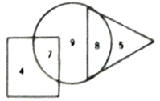
mp-police/2023-08-24-s2/q040-ba8afde7.pngQ46 Mental AbilityA figure analogy is given below. Understand the logic behind it and complete the analogy for the next figure.
एक आकृति सादृश्य नीचे दिया गया है। इसके पीछे के तर्क को समझें और अगली आकृति के लिए सादृश्य को पूर्ण करें।- Option a
- Option b
- Option c
- Option d
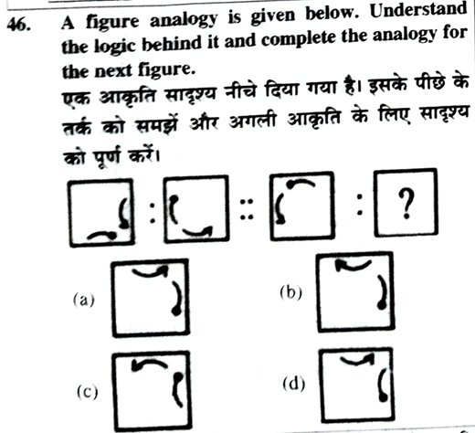
mp-police/2023-08-24-s2/q046-a9e47890.pngQ47 Mental AbilitySelect the option that will come next in the given series.
उस विकल्प का चयन करें जो दी गई श्रृंखला में आगे आएगा।- Option a
- Option b
- Option c
- Option d
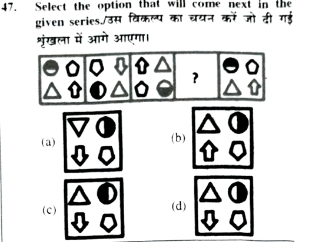
mp-police/2023-08-24-s2/q047-e894a223.pngQ50 Mental AbilityIdentify the class that best represents the Venn-diagram (three nested circles).
उस वर्ग की पहचान करें जो वेन-आरेख का सबसे अच्छा प्रतिनिधित्व करता है।- Sportsperson, Footballer, Goalkeeper
- College, University, Students
- Professionals, Students, IPS
- Mountains, Plateaus, Plains
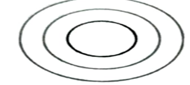
mp-police/2023-08-24-s2/q050-4097e8a4.pngQ51 Mental AbilityHow many squares are there in the following figures?
निम्नलिखित आकृतियों में कितने वर्ग हैं?- 5
- 6
- 7
- 8
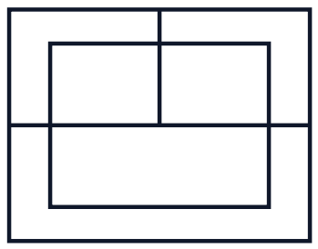
mp-police/2023-08-24-s2/q051-6401d892.pngQ52 Mental AbilityHow many triangles are there in the following figures?
निम्नलिखित आकृतियों में कितने त्रिभुज हैं?- 12
- 14
- 13
- 15
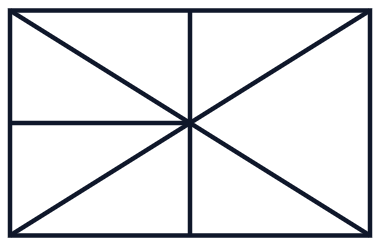
mp-police/2023-08-24-s2/q052-229bc2fd.pngQ53 Mental AbilityIf the mirror is placed on the line, then which of the answer figure is the right mirror image of the given figure?
यदि एक दर्पण को दर्शाई गई रेखा पर रखा जाये, तो दी गई विकल्प आकृतियों में से कौन-सी सही दर्पण छवि होगी?- Option a
- Option b
- Option c
- Option d
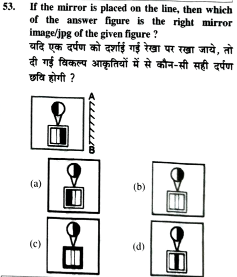
mp-police/2023-08-24-s2/q053-6e81f5d7.pngQ72 Mental AbilityWhich of the following cube in the answer figure cannot be made based on the unfolded cube in the question figure?
उत्तर आकृति में निम्नलिखित में से कौन-सा घन प्रश्न आकृति में खुले घन के आधार पर नहीं बनाया जा सकता है?- Option a
- Option b
- Option c
- Option d
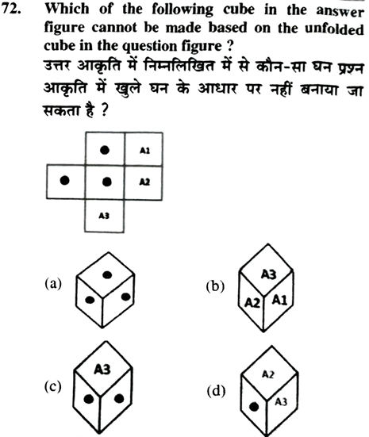
mp-police/2023-08-24-s2/q072-f1992021.png2023-08-24-s3 mcq's/mp_police_2023_shift3.xlsx
Q36 General ReasoningFind the number of triangles in the given figure.
इस आकृति में त्रिभुज की संख्या ज्ञात कीजिए।- 6
- 3
- 5
- 4
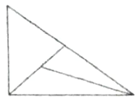
mp-police/2023-08-24-s3/q036-bc46a2c3.pngQ37 General ReasoningFind the number of triangles in the given figure.
इस आकृति में त्रिभुज की संख्या ज्ञात कीजिए।- 8
- 3
- 5
- 7
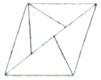
mp-police/2023-08-24-s3/q037-4c4b09f6.pngQ41 General ReasoningIn the given diagram, Triangle represents the person who can speak Hindi, Square represents the person who can speak Punjabi and Circle represents the person who can speak English. The person who can speak all the languages is indicated by which number?
दिए गए आरेख में, त्रिभुज उस व्यक्ति का प्रतिनिधित्व करता है जो हिंदी बोल सकते हैं, वर्ग उस व्यक्ति का प्रतिनिधित्व करता है जो पंजाबी बोल सकते हैं और वृत्त उस व्यक्ति का प्रतिनिधित्व करता है जो अंग्रेजी बोल सकते हैं। वह व्यक्ति जो सभी भाषाएँ बोल सकता है, को कौन-सी संख्या इंगित करती है?- 10
- 4
- 7
- 1
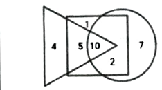
mp-police/2023-08-24-s3/q041-b9c49359.pngQ46 General ReasoningA figure analogy is given below. Understand the logic behind it and complete the analogy for the next figure.
एक आकृति सादृश्य नीचे दिया गया है। इसके पीछे के तर्क को समझें और अगली आकृति के लिए सादृश्य को पूर्ण करें।- Figure (a)
- Figure (b)
- Figure (c)
- Figure (d)
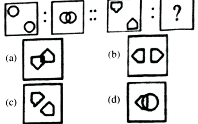
mp-police/2023-08-24-s3/q046-dd468596.pngQ47 General ReasoningSelect the option that will come next in the given series.
उस विकल्प का चयन करें जो दी गई श्रृंखला में आगे आएगा।- Figure (a)
- Figure (b)
- Figure (c)
- Figure (d)
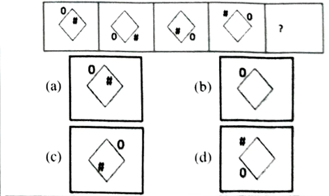
mp-police/2023-08-24-s3/q047-1c890e21.pngQ50 General ReasoningIdentify the class that best represents the Venn-diagram.
उस वर्ग की पहचान करें जो वेन-आरेख का सबसे अच्छा प्रतिनिधित्व करता है।- Doctors, Professors, Hospital
- Professors, Post-graduates, Employed
- Infant, Living being, Trees
- English, Hindi, Urdu
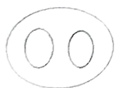
mp-police/2023-08-24-s3/q050-21c2f0df.pngQ51 General ReasoningHow many straight lines are there in the following figures?
निम्नलिखित आकृतियों में कितनी सीधी रेखाएँ हैं?- 10
- 11
- 12
- 13
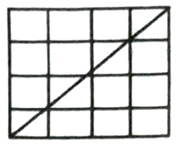
mp-police/2023-08-24-s3/q051-1e812a1e.pngQ52 General ReasoningHow many triangles are there in the following figures?
निम्नलिखित आकृतियों में कितने त्रिभुज हैं?- 8
- 6
- 7
- 5
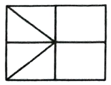
mp-police/2023-08-24-s3/q052-577d62c9.pngQ53 General ReasoningIf the mirror is placed on the line AB, then which of the answer figure is the right mirror image of the given figure?
यदि एक दर्पण को दर्शाई गई रेखा पर रखा जाये, तो दी गई विकल्प आकृतियों में से कौन-सी सही दर्पण छवि होगी?- Figure (a)
- Figure (b)
- Figure (c)
- Figure (d)
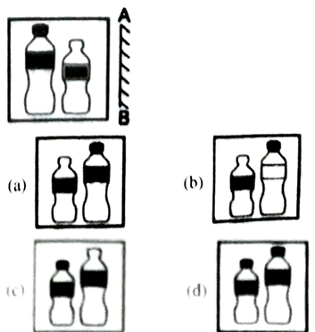
mp-police/2023-08-24-s3/q053-b384f0c9.pngQ72 Mental AbilityWhich of the following cube in the answer figure cannot be made based on the unfolded cube in the question figure?
उत्तर आकृति में निम्नलिखित में से कौन-सा घन प्रश्न आकृति में खुले घन के आधार पर नहीं बनाया जा सकता है?- Figure (a)
- Figure (b)
- Figure (c)
- Figure (d)
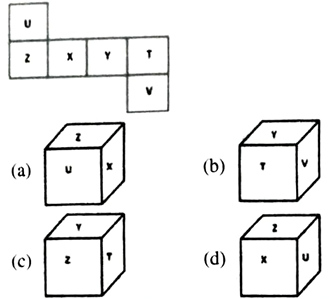
mp-police/2023-08-24-s3/q072-1dbfff69.pngQ97 General AptitudeIn the given figure, O is the center of the circle and OC = AC. Find angle ADC.
दिए गए चित्र में, O वृत्त का केंद्र है और OC = AC है तो ∠ADC ज्ञात कीजिये?- 30 degrees
- 45 degrees
- 60 degrees
- 90 degrees
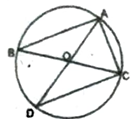
mp-police/2023-08-24-s3/q097-634354ba.png2023-08-25-s1 mcq's/mp_police_2023_shift1.xlsx
Q36 General ReasoningFind the number of triangles in the given figure.
इस आकृति में त्रिभुजों की संख्या ज्ञात कीजिए।- 5
- 6
- 4
- 8
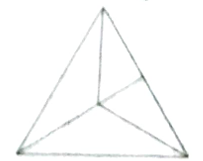
mp-police/2023-08-25-s1/q036-842b103b.pngQ37 General ReasoningFind the Number of triangles in the figure.
इस आकृति में त्रिभुजों की संख्या ज्ञात कीजिए।- 5
- 7
- 6
- 9
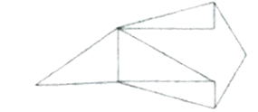
mp-police/2023-08-25-s1/q037-29fdcbd6.pngQ41 General ReasoningIdentify the diagram that best represents the relation between Whole Number, Rational Number and Irrational Number?
उस आरेख की पहचान करें जो पूर्ण संख्या, परिमेय संख्या और अपरिमेय संख्या के बीच संबंध को सर्वोत्तम रूप से दर्शाता है?- Figure (a)
- Figure (b)
- Figure (c)
- Figure (d)
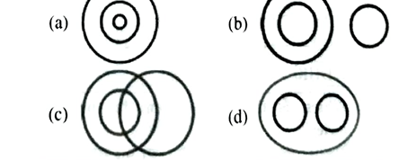
mp-police/2023-08-25-s1/q041-c25c09e9.pngQ46 General ReasoningA figure analogy is given below. Understand the logic behind it and complete the analogy for the next figure.
एक आकृति सादृश्य नीचे दिया गया है। इसके पीछे के तर्क को समझें और अगली आकृति के लिए सादृश्य को पूर्ण करें।- Figure (a)
- Figure (b)
- Figure (c)
- Figure (d)
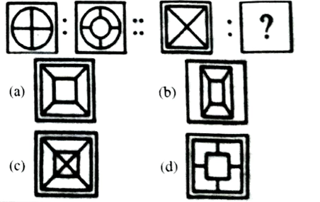
mp-police/2023-08-25-s1/q046-71389b3e.pngQ47 General ReasoningSelect the next figure in the following figure series?
निम्नलिखित आकृति शृंखला में अगली आकृति का चयन करें?- Figure (a)
- Figure (b)
- Figure (c)
- Figure (d)
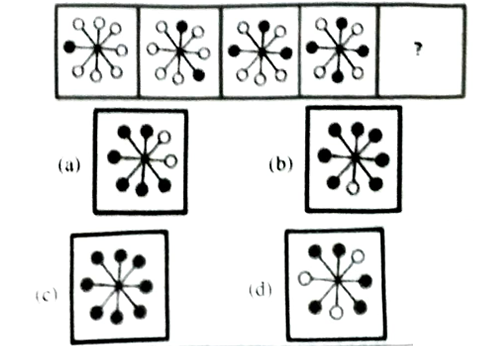
mp-police/2023-08-25-s1/q047-56487244.pngQ48 General ReasoningIdentify the class that best represents the Venn-diagram.
उस वर्ग की पहचान करें जो वेन-आरेख का सबसे अच्छा प्रतिनिधित्व करता है।- Remote, button, T.V.
- Doctors, Professors, Man
- Professors, Post-graduates, Employed
- Infant, living being, trees
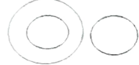
mp-police/2023-08-25-s1/q048-6cd34189.pngQ49 General ReasoningHow many quadrilaterals are there in the following figures?
निम्नलिखित आकृतियों में कितने चतुर्भुज हैं?- 8
- 7
- 6
- 5
mp-police/2023-08-25-s1/q049-c77a933e.png
Q50 General ReasoningHow many squares are there in the following figure?
निम्नलिखित आकृति में कितने वर्ग हैं?- 44
- 34
- 50
- 28
mp-police/2023-08-25-s1/q050-384b7e31.png
Q51 General ReasoningIf the mirror is placed on the line, then which of the answer figure is the right mirror image of the given figure?
यदि एक दर्पण को दर्शाई गई रेखा पर रखा जाये, तो दी गई विकल्प आकृतियों में से कौन-सी सही दर्पण छवि होगी?- Figure (a)
- Figure (b)
- Figure (c)
- Figure (d)
mp-police/2023-08-25-s1/q051-6a31e8f4.png
Q72 Mental AbilityWhich of the following cube in the answer figure cannot be made based on the unfolded cube in the question figure?
उत्तर आकृति में निम्नलिखित में से कौन-सा घन प्रश्न आकृति में खुले घन के आधार पर नहीं बनाया जा सकता है?- Figure (a)
- Figure (b)
- Figure (c)
- Figure (d)
mp-police/2023-08-25-s1/q072-ec917c6e.png
Q97 General AptitudeIn the given figure, O is the center of the circle, ∠OAB = 80° and ∠OCB = 70°. What is the measure of ∠AOC?
दिए गए चित्र में, O वृत्त का केंद्र है, ∠OAB = 80° और ∠OCB = 70° है। ∠AOC का माप क्या है?- 150°
- 120°
- 80°
- 60°
mp-police/2023-08-25-s1/q097-18d1b787.png
2023-08-25-s2 mcq's/mp_police_2023_shift2.xlsx
Q36 General ReasoningFind the number of triangles in the given figure.
इस आकृति में त्रिभुज की संख्या ज्ञात कीजिए।- 5
- 6
- 7
- 9
mp-police/2023-08-25-s2/q036-50e139d3.png
Q37 General ReasoningFind the number of triangles in the given figure.
इस आकृति में त्रिभुज की संख्या ज्ञात कीजिए।- 3
- 6
- 2
- 4
mp-police/2023-08-25-s2/q037-d1e414f1.png
Q41 General ReasoningIn the given diagram 'A' indicates the person who plays Football, 'B' indicates the person who plays Cricket and 'C' indicates the person who plays Hockey. What does 'D' indicate in the figure?
दिए गए आरेख में 'A' फुटबॉल खेलने वाले व्यक्ति को इंगित करता है, 'B' क्रिकेट खेलने वाले व्यक्ति को इंगित करता है और 'C' हॉकी खेलने वाले व्यक्ति को इंगित करता है। चित्र में 'D' क्या दर्शाता है?- Cricket and Football player
- Football and Hockey player
- Hockey and Cricket player
- Cricket, Football and Hockey player
mp-police/2023-08-25-s2/q041-3cb703b8.png
Q46 General ReasoningA figure analogy is given below. Understand the logic behind it and complete the analogy for the next figure.
एक आकृति सादृश्य नीचे दिया गया है। इसके पीछे के तर्क को समझें और अगली आकृति के लिए सादृश्य को पूर्ण करें।- Figure option (a)
- Figure option (b)
- Figure option (c)
- Figure option (d)
mp-police/2023-08-25-s2/q046-793bf4c2.png
Q47 General ReasoningSelect the next figure in the following figure series.
निम्नलिखित आकृति श्रृंखला में अगली आकृति का चयन करें?- Figure option (a)
- Figure option (b)
- Figure option (c)
- Figure option (d)
mp-police/2023-08-25-s2/q047-7ab8fb48.png
Q48 General ReasoningIdentify the class that best represents the Venn-diagram.
उस वर्ग की पहचान करें जो वेन-आरेख का सबसे अच्छा प्रतिनिधित्व करता है।- Players, Singers, Students
- Tortoise, Mammals, Amphibians
- Women, Girlfriend, Widow
- Pen, pencil, paper
mp-police/2023-08-25-s2/q048-31db3805.png
Q49 General ReasoningHow many squares are there in the following figure?
निम्नलिखित आकृति में कितने वर्ग हैं?- 60
- 42
- 32
- 30
mp-police/2023-08-25-s2/q049-1d38d892.png
Q50 General ReasoningHow many triangles are in the given figure?
दी गई आकृति में कितने त्रिभुज हैं?- 28
- 32
- 24
- 19
mp-police/2023-08-25-s2/q050-c994f20f.png
Q51 General ReasoningIf the mirror is placed on the line, then which of the answer figure is the right mirror image of the given figure?
यदि एक दर्पण को दर्शाई गई रेखा पर रखा जाये, तो दी गई विकल्प आकृतियों में से कौन-सी सही दर्पण छवि होगी?- Figure option (a)
- Figure option (b)
- Figure option (c)
- Figure option (d)
mp-police/2023-08-25-s2/q051-b06c0bbf.png
Q72 Mental AbilityThree positions of a cube are shown below. What will come opposite to face containing '*'?
एक घन की तीन स्थितियाँ नीचे दर्शाई गई हैं। '*' वाले फलक के विपरीत क्या आयेगा?- $
- @
- #
- Ω
mp-police/2023-08-25-s2/q072-d9d60ce6.png
Q93 General AptitudeIf one small square in the grid is of area 4 sq. units, what is the perimeter of the rectangle drawn on the grid?
यदि ग्रिड में एक छोटा वर्ग 4 वर्ग इकाइयों का है, तो ग्रिड पर बनाए गए आयत का परिमाप क्या है?- 8 units
- 24 units
- 12 units
- 32 units
mp-police/2023-08-25-s2/q093-f2cc2114.png
2023-08-25-s3 mcq's/mp_police_constable_2023_shift3.xlsx
Q36 General ReasoningFind the number of triangles in the figure.
इस आकृति में त्रिभुज की संख्या ज्ञात कीजिए।- 6
- 7
- 8
- 9
mp-police/2023-08-25-s3/q036-4a4819b0.png
Q40 General ReasoningIn the given figure, which Alphabet indicates the Women who are neither Sister nor Grandmother?
दी गई आकृति में, कौन-सी वर्णमाला उन महिलाओं को इंगित करती है जो न तो बहन हैं और न ही दादी हैं?- B
- A
- D
- E
mp-police/2023-08-25-s3/q040-97098987.png
Q45 General ReasoningA figure analogy is given below. Understand the logic behind it and complete the analogy for the next figure.
एक आकृति सादृश्य नीचे दिया गया है। इसके पीछे के तर्क को समझें और अगली आकृति के लिए सादृश्य को पूर्ण करें।- Figure (a)
- Figure (b)
- Figure (c)
- Figure (d)
mp-police/2023-08-25-s3/q045-ed59338f.png
Q46 General ReasoningSelect the next figure in the following figure series?
निम्नलिखित आकृति शृंखला में अगली आकृति का चयन करें?- Figure (a)
- Figure (b)
- Figure (c)
- Figure (d)
mp-police/2023-08-25-s3/q046-f516ca3a.png
Q47 General ReasoningIdentify the class that best represents the Venn-diagram.
उस वर्ग की पहचान करें जो वेन-आरेख का सबसे अच्छा प्रतिनिधित्व करता है।- Moon, Earth, Sun
- Plants, Humans, Respiration
- Universe, Stars, Sun
- Superhero, Superpower, Men
mp-police/2023-08-25-s3/q047-0e691225.png
Q48 General ReasoningHow many squares are in the given figure?
दी गई आकृति में कितने वर्ग हैं?- 6
- 11
- 4
- 5
mp-police/2023-08-25-s3/q048-09e8a517.png
Q49 General ReasoningHow many triangles are in the given figure?
दी गई आकृति में कितने त्रिभुज हैं?- 11
- 15
- 10
- 8
mp-police/2023-08-25-s3/q049-06288335.png
Q50 General ReasoningFind the number of triangle in the given figure.
दी गई आकृति में त्रिभुज की संख्या ज्ञात कीजिए।- 7
- 8
- 9
- 6
mp-police/2023-08-25-s3/q050-30e6ce4a.png
Q51 General ReasoningIf the mirror is placed on the line, then which of the answer figure is the right mirror image of the given figure?
यदि एक दर्पण को दर्शाई गई रेखा पर रखा जाये, तो दी गई विकल्प आकृतियों में से कौन-सी सही दर्पण छवि होगी?- Figure (a)
- Figure (b)
- Figure (c)
- Figure (d)
mp-police/2023-08-25-s3/q051-4843cc4f.png
Q72 Mental AbilityWhich of the following cube in the answer figure cannot be made based on the unfolded cube in the question figure?
उत्तर आकृति में निम्नलिखित में से कौन-सा घन, प्रश्न आकृति में खुले घन के आधार पर नहीं बनाया जा सकता है?- Cube: TN top, KG front, KM side
- Cube: G top, KM front, TN side
- Cube: GM top, CM front, KG side
- Cube: KM top, GM front, KG side
mp-police/2023-08-25-s3/q072-07396ab3.png
Q97 General AptitudeABC is a triangle inscribed in a semicircle. If AC = 12 cm and BC = 5 cm, what is the perimeter of the semicircle?
ABC एक अर्धवृत्त में उत्कीर्ण एक त्रिभुज है। यदि AC = 12 सेमी और BC = 5 सेमी, है तो अर्धवृत्त की परिधि ज्ञात कीजिये?- 6.5 (π + 1) cm
- 6.5 (π − 1) cm
- 6.5 (π + 2) cm
- 6.5 (π − 2) cm
mp-police/2023-08-25-s3/q097-68097a03.png
2023-08-26-s2 mcq's/mcq.xlsx
Q36 General ReasoningFind the number of triangles in the given figure.
इस आकृति में त्रिभुज की संख्या ज्ञात कीजिए।- 11
- 14
- 15
- 13
mp-police/2023-08-26-s2/q036-200c4174.png
Q40 General ReasoningIn the given diagram, Circle represents the students who study Physics, Triangle represents students who study Science, Square represents students who study Chemistry and Rectangle represents students who study Math. Which number indicates the students who study all the subjects?
दिए गए आरेख में, वृत्त भौतिकी, त्रिभुज विज्ञान, वर्ग रसायन विज्ञान और आयत गणित का अध्ययन करने वाले छात्रों का प्रतिनिधित्व करता है। सभी विषयों का अध्ययन करने वाले छात्रों को कौन-सी संख्या इंगित करती है?- 3
- 9
- 7
- 8
mp-police/2023-08-26-s2/q040-0220ebf0.png
Q45 General ReasoningFrom the given answer figures, select the one in which the question figure is hidden/embedded.
दी गई उत्तर आकृति से, उसका चयन करें जिसमें प्रश्न आकृति छिपी/सन्निहित है।- Figure (a)
- Figure (b)
- Figure (c)
- Figure (d)
mp-police/2023-08-26-s2/q045-44ed4da3.png
Q46 General ReasoningFrom the given answer figures, select the one in which the question figure is hidden/embedded.
दी गई उत्तर आकृति से, उसका चयन करें जिसमें प्रश्न आकृति छिपी/सन्निहित है।- Figure (a)
- Figure (b)
- Figure (c)
- Figure (d)
mp-police/2023-08-26-s2/q046-9cf9225c.png
Q47 General ReasoningComplete the question figure by choosing the best alternative from the answer figures.
उत्तर आकृति में से सबसे ठीक विकल्प चुनकर प्रश्न आकृति को पूरा कीजिए।- Figure (a)
- Figure (b)
- Figure (c)
- Figure (d)
mp-police/2023-08-26-s2/q047-43a78173.png
Q48 General ReasoningSelect the figure that will come next in the following figure series.
उस आकृति का चयन करें जो निम्नलिखित आकृति शृंखला में आगे आएगी।- Figure (a)
- Figure (b)
- Figure (c)
- Figure (d)
mp-police/2023-08-26-s2/q048-15c7bf81.png
Q49 General ReasoningSelect the figure that will come next in the following series.
उस आकृति का चयन करें जो निम्नलिखित शृंखला में आगे आएगी।- Figure (a)
- Figure (b)
- Figure (c)
- Figure (d)
mp-police/2023-08-26-s2/q049-56a4abcf.png
Q50 General ReasoningIdentify the class that best represents the Venn diagram.
उस वर्ग की पहचान करें जो वेन-आरेख का सबसे अच्छा प्रतिनिधित्व करता है।- Road, Transport, Bus
- Gender, Female, Male
- Universe, Stars, Sun
- Stationary items, Pencils, Potatoes
mp-police/2023-08-26-s2/q050-d72ff538.png
Q51 General ReasoningWhat is the number of rectangles in the given figure?
दी गई आकृति में आयतों की संख्या कितनी है?- 9
- 10
- 11
- 12
mp-police/2023-08-26-s2/q051-df1f09bd.png
Q52 General ReasoningFind the number of triangles in the given figure.
दी गई आकृति में त्रिभुज की संख्या ज्ञात कीजिए।- 10
- 9
- 8
- 11
mp-police/2023-08-26-s2/q052-21bb6ac2.png
Q72 Mental AbilityWhich of the following cubes in the answer figure can be made based on the unfolded cube in the question figure?
उत्तर आकृति में निम्नलिखित में से कौन-सा घन, प्रश्न आकृति में खुले घन के आधार पर बनाया जा सकता है?- Figure (a)
- Figure (b)
- Figure (c)
- Figure (d)
mp-police/2023-08-26-s2/q072-855f1709.png
Q98 General AptitudeIn the given figure, ABC is a right-angled triangle, right-angled at B, and a semicircle is attached to it with AC as diameter. If AB = 15 cm and BC = 20 cm, what is the perimeter (in cm) of the figure?
दिए गए चित्र में, ABC एक समकोण त्रिभुज है, B पर समकोण है और उससे जुड़ा एक अर्ध-वृत्त जिसका व्यास AC है। यदि AB = 15 सेमी और BC = 20 सेमी, तो आकृति की परिधि (सेमी में) ज्ञात कीजिये?- 25π + 35
- 12.5π + 35
- 15π + 35
- 20π + 35
mp-police/2023-08-26-s2/q098-7e5df82c.png
2023-08-26-s3 mcq's/mp_police_2023_shift3 (2).xlsx
Q38 General ReasoningIn the given diagram, Circle represents the person whose favourite food is Pizza, Triangle represents the person whose favourite food is Burger and Square represents the person which favourite food is Hotdog. Which number indicates the number of persons whose favourite food is only Pizza and Burger?
दिए गए आरेख में, वृत्त उस व्यक्ति का प्रतिनिधित्व करता है जिसका पसंदीदा भोजन पिज्जा है, त्रिभुज उस व्यक्ति का प्रतिनिधित्व करता है जिसका पसंदीदा भोजन बर्गर है और वर्ग उस व्यक्ति का प्रतिनिधित्व करता है जिसका पसंदीदा भोजन हॉट डॉग है। कौन-सी संख्या उन व्यक्तियों की संख्या दर्शाती है जिनका पसंदीदा भोजन केवल पिज्जा और बर्गर है ?- 7
- 11
- 33
- 19
mp-police/2023-08-26-s3/q038-390b9ff0.png
Q43 General ReasoningFrom the given answer figures, select the one in which question figure is hidden/embedded.
दी गई उत्तर आकृति से, उसका चयन करें जिसमें प्रश्न आकृति छिपी/सन्निहित है।- Figure (a)
- Figure (b)
- Figure (c)
- Figure (d)
mp-police/2023-08-26-s3/q043-b9bfc5ec.png
Q44 General ReasoningFrom the given answer figures, select the one in which question figure is hidden/embedded.
दी गई उत्तर आकृति से, उसका चयन करें जिसमें प्रश्न आकृति छिपी/सन्निहित है।- Figure (a)
- Figure (b)
- Figure (c)
- Figure (d)
mp-police/2023-08-26-s3/q044-32bb4a4e.png
Q45 General ReasoningComplete the question figure by choosing the best alternative from the answer figure.
उत्तर आकृति में से सबसे ठीक विकल्प चुनकर प्रश्न आकृति को पूरा कीजिए।- Figure (a)
- Figure (b)
- Figure (c)
- Figure (d)
mp-police/2023-08-26-s3/q045-49636bf1.png
Q46 General ReasoningSelect the figure that will come next in the following figure series.
उस आकृति का चयन करें जो निम्नलिखित आकृति शृंखला में आगे आएगी।- Figure (a)
- Figure (b)
- Figure (c)
- Figure (d)
mp-police/2023-08-26-s3/q046-f0a71d24.png
Q47 General ReasoningSelect the figure that will come next in the following series.
उस आकृति का चयन करें जो निम्नलिखित शृंखला में आगे आएगी।- Figure (a)
- Figure (b)
- Figure (c)
- Figure (d)
mp-police/2023-08-26-s3/q047-ab910e33.png
Q49 General ReasoningIdentify the class that best represents the Venn-diagram.
उस वर्ग की पहचान करें जो वेन-आरेख का सबसे अच्छा प्रतिनिधित्व करता है।- Universe, Stars, Sun
- Stationary items, Pencils, Potatoes
- Bank, Net banking, Spoon
- Chair, Table, Road
mp-police/2023-08-26-s3/q049-324adc96.png
Q50 General ReasoningHow many triangles are in the given figure?
दी गई आकृति में कितने त्रिभुज हैं ?- 10
- 14
- 8
- 18
mp-police/2023-08-26-s3/q050-a208f91e.png
Q51 General ReasoningHow many triangles are in the given figure?
दी गई आकृति में कितने त्रिभुज हैं ?- 10
- 20
- 17
- 15
mp-police/2023-08-26-s3/q051-1fc85e3a.png
Q52 General ReasoningFind the number of triangle in the given figure.
दी गई आकृति में त्रिभुजों की संख्या ज्ञात कीजिए।- 8
- 7
- 6
- 9
mp-police/2023-08-26-s3/q052-1e391ac9.png
Q72 Mental AbilityThree positions of a cube are shown below. What will come opposite to face containing 'A3'?
एक घन की तीन स्थितियाँ नीचे दर्शाई गई हैं। 'A3' वाले फलक के विपरीत क्या आएगा ?- A1
- A2
- A5
- A6
mp-police/2023-08-26-s3/q072-98e8305d.png
Q89 General AptitudeIn the given figure, if x = 20°, find y.
दी गयी आकृति में, यदि x = 20°, y का मान ज्ञात करें।- 26°
- 21°
- 24°
- 27°
mp-police/2023-08-26-s3/q089-e0dac949.png
Q98 General AptitudeIn the given figure, O is the center of the circle and XY is a tangent to the circle at B. If ∠ABY = 30°, what is the measure of ∠AOB?
दिए गए चित्र में, O वृत्त का केंद्र है और XY, B पर वृत्त का स्पर्शरेखा है। यदि ∠ABY = 30° है, तो ∠AOB की माप क्या है ?- 30°
- 45°
- 60°
- 75°
mp-police/2023-08-26-s3/q098-394c5cc4.png
2023-08-27-s1 mcq's/mp_police_2023_shift1 (2).xlsx
Q36 General ReasoningIn the given diagram, Circle represents the number of people who like to travel by car, Triangle represents the number of people who like to travel by bus and Rectangle represents the people who like to travel by train. Which number indicates the number of people who like to travel by all the three vehicles?
दिए गए आरेख में, वृत्त उन लोगों की संख्या को दर्शाता है जो कार से यात्रा करना पसंद करते हैं, त्रिभुज उन लोगों की संख्या को दर्शाता है जो बस से यात्रा करना पसंद करते हैं और आयत उन लोगों की संख्या को दर्शाता है जो ट्रेन से यात्रा करना पसंद करते हैं। कौन-सी संख्या उन लोगों की संख्या दर्शाती है जो तीनों वाहनों से यात्रा करना पसंद करते हैं ?- 20
- 30
- 40
- 11
mp-police/2023-08-27-s1/q036-e368f673.png
Q42 General ReasoningFrom the given answer figures, select the one in which question figure is hidden/embedded.
दी गई उत्तर आकृति से, उसका चयन करें जिसमें प्रश्न आकृति छिपी/सन्निहित है।- Figure (a)
- Figure (b)
- Figure (c)
- Figure (d)
mp-police/2023-08-27-s1/q042-b7151456.png
Q43 General ReasoningFrom the given answer figures, select the one in which question figure is hidden/embedded.
दी गई उत्तर आकृति से, उसका चयन करें जिसमें प्रश्न आकृति छिपी/सन्निहित है।- Figure (a)
- Figure (b)
- Figure (c)
- Figure (d)
mp-police/2023-08-27-s1/q043-fb0dfe3d.png
Q44 General ReasoningSelect the option that is related to the third figure in the same way that the second figure is related to the first figure.
उस विकल्प का चयन करें जो तीसरी आकृति से उसी प्रकार संबंधित है जिस प्रकार दूसरी आकृति, पहली आकृति से संबंधित है।- Figure (a)
- Figure (b)
- Figure (c)
- Figure (d)
mp-police/2023-08-27-s1/q044-b19856b1.png
Q45 General ReasoningComplete the question figure by choosing the best alternative from the answer figure.
उत्तर आकृति में से सबसे ठीक विकल्प चुनकर प्रश्न आकृति को पूरा कीजिए।- Figure (a)
- Figure (b)
- Figure (c)
- Figure (d)
mp-police/2023-08-27-s1/q045-afd4f644.png
Q46 General ReasoningSelect the figure that will come next in the following figure series.
उस आकृति का चयन करें जो निम्नलिखित आकृति में आगे आएगी।- Figure (a)
- Figure (b)
- Figure (c)
- Figure (d)
mp-police/2023-08-27-s1/q046-9225168a.png
Q50 General ReasoningIdentify the class that best represents the Venn-diagram.
उस वर्ग की पहचान करें जो वेन-आरेख का सबसे अच्छा प्रतिनिधित्व करता है।- Villagers, Poor persons, Males
- Players, Singers, Students
- Tortoise, Mammals, Amphibians
- Animal, Pet, Cow
mp-police/2023-08-27-s1/q050-93df6eb3.png
Q51 General ReasoningHow many triangles are in the given figure?
दी गई आकृति में कितने त्रिभुज हैं ?- 13
- 15
- 11
- 8
mp-police/2023-08-27-s1/q051-ea2e6ec3.png
Q52 General ReasoningFind the number of triangle in the given figure.
दी गई आकृति में त्रिभुज की संख्या ज्ञात कीजिए।- 21
- 15
- 18
- 22
mp-police/2023-08-27-s1/q052-3e02e729.png
Q53 General ReasoningFind the number of triangle in the given figure.
दी गई आकृति में त्रिभुज की संख्या ज्ञात कीजिए।- 12
- 13
- 14
- 11
mp-police/2023-08-27-s1/q053-486e3b33.png
Q72 Mental AbilityFrom the given option, which answer figure can be made based on the unfolded cube in the question figure?
दिए गए विकल्प में से प्रश्न आकृति में खुले घन के आधार पर कौन-सी उत्तर आकृति बनाई जा सकती है?- Figure (a)
- Figure (b)
- Figure (c)
- Figure (d)
mp-police/2023-08-27-s1/q072-f13cfa8a.png
Q89 General AptitudePQ = QS, QR = RS, ∠SRQ = 120°, then ∠QPS is?
PQ = QS, QR = RS, ∠SRQ = 120°, तो ∠QPS होगा ?- 30°
- 15°
- 45°
- 20°
mp-police/2023-08-27-s1/q089-7a76f6bf.png
Q99 General AptitudeIn the circle with center B, AC is a tangent to the circle at A. AC is 24 cm long and the radius of the circle is 18 cm, what is the length of BC?
एक वृत्त जिसका केंद्र B है में बिंदु A पर AC एक स्पर्शरेखा है। यदि AC की लंबाई 24 सेमी है और वृत्त की त्रिज्या 18 सेमी है, तो BC की लंबाई ज्ञात कीजिये?- 20 cm
- 21 cm
- 24 cm
- 30 cm
mp-police/2023-08-27-s1/q099-1ddb8fa5.png
2023-08-27-s2 mcq's/mp_police_2023_shift2 (2).xlsx
Q37 General ReasoningIn the given diagram, Triangle shows the number who has Xiaomi mobile, Circle shows the number of people who has Samsung mobile and Square shows the number of people who has Oppo mobile. Which number shows the people who has only Samsung mobile ?
दिए गए आरेख में, त्रिभुज उन लोगों की संख्या दिखाता है जिनके पास शाओमी मोबाइल है, वृत्त उन लोगों की संख्या दिखाता है जिनके पास सैमसंग मोबाइल है और वर्ग उन लोगों की संख्या दिखाता है जिनके पास ओप्पो मोबाइल है। कौन-सा नंबर उन लोगों को दिखाता है जिनके पास केवल सैमसंग मोबाइल है ?- 13
- 14
- 17
- 19
mp-police/2023-08-27-s2/q037-751e2e37.png
Q42 General ReasoningFrom the given answer figures, select the one in which question figure is hidden/embedded.
दी गई आकृति से, उसका चयन करें जिसमें प्रश्न आकृति छिपी/सन्निहित है।- Figure (a)
- Figure (b)
- Figure (c)
- Figure (d)
mp-police/2023-08-27-s2/q042-8ca31132.png
Q43 General ReasoningFrom the given answer figures, select the one in which question figure is hidden/embedded.
दी गई उत्तर आकृति से, उसका चयन करें जिसमें प्रश्न आकृति छिपी/सन्निहित है।- Figure (a)
- Figure (b)
- Figure (c)
- Figure (d)
mp-police/2023-08-27-s2/q043-0ba0b0c4.png
Q44 General ReasoningSelect the option that is related to the third figure in the same way that the second figure is related to the first figure.
उस विकल्प का चयन करें जो तीसरी आकृति से उसी प्रकार संबंधित है जिस प्रकार दूसरी आकृति, पहली आकृति से संबंधित है।- Figure (a)
- Figure (b)
- Figure (c)
- Figure (d)
mp-police/2023-08-27-s2/q044-21192f3c.png
Q45 General ReasoningComplete the question figure by choosing the best alternative from the answer figure.
उत्तर आकृति में से सबसे ठीक विकल्प चुनकर प्रश्न आकृति को पूरा कीजिए।- Downward arrow (↓)
- Upward arrow (↑)
- Rightward arrow (→)
- Leftward arrow (←)
mp-police/2023-08-27-s2/q045-0bbcf34d.png
Q46 General ReasoningSelect the option that will come next in the given series.
उस विकल्प का चयन करें जो दी गई शृंखला में आगे आएगा।- Figure (a)
- Figure (b)
- Figure (c)
- Figure (d)
mp-police/2023-08-27-s2/q046-ddd7e10a.png
Q50 General ReasoningIdentify the classes that best represents the relationship among the given diagram.
उन वर्गों की पहचान करें जो दिए गए आरेख के बीच संबंध का सबसे अच्छा प्रतिनिधित्व करते हैं।- Primary, Secondary, Tertiary
- Industry, Primary, Secondary
- Tertiary, Industry, Secondary
- Indian economy, Industry, Primary
mp-police/2023-08-27-s2/q050-48cb6f10.png
Q51 General ReasoningHow many triangles are there in the given figure?
दी गई आकृति में कितने त्रिभुज हैं ?- 22
- 25
- 20
- 26
mp-police/2023-08-27-s2/q051-165cc453.png
Q52 General ReasoningFind the number of triangle in the given figure.
दी गई आकृति में त्रिभुज की संख्या ज्ञात कीजिए।- 11
- 12
- 14
- 15
mp-police/2023-08-27-s2/q052-72809447.png
Q53 General ReasoningFind the number of triangle in the given figure.
दी गई आकृति में त्रिभुज की संख्या ज्ञात कीजिए।- 26
- 22
- 28
- 27
mp-police/2023-08-27-s2/q053-018d0208.png
Q72 Mental AbilityFrom the given option, which answer figure can be made based on the unfolded cube in the question figure ?
दिए गए विकल्प में से, प्रश्न आकृति में खुले घन के आधार पर कौन-सी उत्तर आकृति बनाई जा सकती है?- Figure (a)
- Figure (b)
- Figure (c)
- Figure (d)
mp-police/2023-08-27-s2/q072-bb67a623.png
Q99 General AptitudeIn the given diagram 'O' is the center of the circle and ∠ACB = 30°. What is angle ∠AOB ?
दिए गए आरेख में 'O' वृत्त का केंद्र और ∠ACB = 30° है तो कोण ∠AOB का मान ज्ञात कीजिये ?- 90°
- 70°
- 60°
- 45°
mp-police/2023-08-27-s2/q099-936c6008.png
2023-08-27-s3 mcq's/mp_police_2023_shift3 (1).xlsx
Q32 Electronics & CommunicationWhich one of the symbols given below represents a FET?
निम्नलिखित में से कौन-सा चिह्न FET को दर्शाता है?- Symbol (a) – terminals E, B1, B2
- Symbol (b) – terminals G, D, S (insulated gate)
- Symbol (c) – terminals G, D, S (junction gate)
- Symbol (d) – terminals B, C, E
mp-police/2023-08-27-s3/q032-8c4bbb15.png
Q38 Electronics & CommunicationThe secondary voltage in the given circuit is? (5:1 transformer, primary 50 V peak)
दिए गए सर्किट में द्वितीयक वोल्टेज क्या है? (5:1 ट्रांसफार्मर, प्राथमिक 50 V peak)- 10 V peak out of phase with the primary
- 250 V peak in phase with the primary
- 10 V peak in phase with the primary
- 250 V peak out of phase with the primary
mp-police/2023-08-27-s3/q038-b44de175.png
Q50 Electronics & CommunicationIf the op-amp is ideal, what is the value of V0 for the circuit given below?
यदि ओप-एम्प आदर्श है, तो नीचे दिए गए परिपथ के लिए V0 का मान क्या है?- 10 V
- 15 V
- 3 V
- 6 V
mp-police/2023-08-27-s3/q050-e09a3822.png
Q81 Workshop & SafetyWhat is the name of the safety sign given below?
नीचे दिए गए सुरक्षा संकेत का नाम क्या है?- Two way traffic sign
- Mandatory sign
- Prohibition sign
- Information sign
mp-police/2023-08-27-s3/q081-2d4b7ca6.png
Q84 Workshop & SafetyWhat is the name of road safety sign given below?
नीचे दिए गए सड़क सुरक्षा संकेत का क्या नाम है?- Mandatory sign
- Cautionary sign
- Informatory sign
- Prohibition sign
mp-police/2023-08-27-s3/q084-2b8514b7.png
2023-08-28-s2 mcq's/mp_police_2023_shift2 (1).xlsx
Q37 General ReasoningIdentify the diagram that best illustrates the relationship between Hospital, Doctor and Nurse?
उस आरेख की पहचान करें जो अस्पताल, डॉक्टर और नर्स के बीच के संबंध को सबसे अच्छी तरह से दर्शाता है?- Two concentric circles and a separate circle
- Two separate circles inside a larger circle
- Three separate circles
- Three concentric circles
mp-police/2023-08-28-s2/q037-3bc7ac5f.png
Q38 General ReasoningIn the following Venn diagram, Triangle shows Graduate students, Circle shows 12th pass students and Rectangle shows students who are preparing for Govt. Jobs. How many Graduate students preparing for Govt. Jobs?
निम्नलिखित आरेख में, त्रिभुज स्नातक छात्रों को दिखाता है, वृत्त 12वीं पास छात्रों को दिखाता है और आयत उन छात्रों को दिखाता है जो सरकारी नौकरियों की तैयारी कर रहे हैं। कितने स्नातक छात्र सरकारी नौकरी की तैयारी कर रहे हैं?- 136
- 106
- 100
- 66
mp-police/2023-08-28-s2/q038-3ff421f9.png
Q42 General ReasoningFrom the given answer figures, select the one in which question figure is hidden/embedded.
दी गई उत्तर आकृति से, उसका चयन करें जिसमें प्रश्न आकृति छिपी/सन्निहित है।- Figure (a)
- Figure (b)
- Figure (c)
- Figure (d)
mp-police/2023-08-28-s2/q042-036cb148.png
Q43 General ReasoningFrom the given answer figures, select the one in which question figure is hidden/embedded.
दी गई उत्तर आकृति से, उसका चयन करें जिसमें प्रश्न आकृति छिपी/सन्निहित है।- Figure (a)
- Figure (b)
- Figure (c)
- Figure (d)
mp-police/2023-08-28-s2/q043-2515722f.png
Q44 General ReasoningSelect the option that is related to the third figure in the same way that the second figure is related to the first figure.
उस विकल्प का चयन करें जो तीसरी आकृति से उसी प्रकार संबंधित है जिस प्रकार दूसरी आकृति, पहली आकृति से संबंधित है।- Figure (a)
- Figure (b)
- Figure (c)
- Figure (d)
mp-police/2023-08-28-s2/q044-329e5925.png
Q45 General ReasoningComplete the question figure by choosing the best alternative from the answer figure.
उत्तर आकृति में से सबसे ठीक विकल्प चुनकर प्रश्न आकृति को पूरा कीजिए।- Figure (a)
- Figure (b)
- Figure (c)
- Figure (d)
mp-police/2023-08-28-s2/q045-27860e41.png
Q46 General ReasoningSelect the option that will come next in the given series.
उस विकल्प का चयन करें जो दी गई श्रृंखला में आगे आएगा।- Figure (a)
- Figure (b)
- Figure (c)
- Figure (d)
mp-police/2023-08-28-s2/q046-0e69a9c3.png
Q49 General ReasoningIdentify the classes that best represents the relationship among the given diagram.
उन वर्गों की पहचान करें जो दिए गए आरेख के बीच संबंध का सबसे अच्छा प्रतिनिधित्व करते हैं।- Fish, snake, Birds
- Copper, paper, wire
- Biodegradable substances, wood, paper
- Mother, female, Police officer
mp-police/2023-08-28-s2/q049-701815c1.png
Q50 General ReasoningHow many rectangles are there in the following figure?
निम्नलिखित आकृति में कितने आयत हैं?- 10
- 8
- 13
- 15
mp-police/2023-08-28-s2/q050-3ec8f5c1.png
Q51 General ReasoningFind the number of rectangles in the given figure.
दी गई आकृति में आयतों की संख्या ज्ञात कीजिए।- 4
- 5
- 3
- 6
mp-police/2023-08-28-s2/q051-c5cbbc97.png
Q52 General ReasoningFind the number of straight lines in the given figure.
दी गई आकृति में सीधी रेखाओं की संख्या ज्ञात कीजिए।- 8
- 9
- 10
- 7
mp-police/2023-08-28-s2/q052-e5b289f9.png
Q72 Mental AbilityTwo position of a cube is shown below. What will come opposite to face containing '='?
एक घन की दो स्थितियाँ नीचे दर्शाई गई हैं। '=' वाले फलक के विपरीत क्या आएगा?- .com
- @
- P2
- P1
mp-police/2023-08-28-s2/q072-25979273.png
Q99 General AptitudeIn the given figure, O is the center of the circle and ∠AOC = 150°. What is the measure of ∠ABC?
दिए गए चित्र में, O वृत्त का केंद्र और ∠AOC = 150° है तो ∠ABC की माप क्या है?- 30°
- 55°
- 75°
- 105°
mp-police/2023-08-28-s2/q099-47dcec72.png
2023-08-28-s3 mp_police_2023_shift3.xlsx
Q38 General ReasoningIn the given diagram, Triangle represents the people who like to travel in mountains, Square represents the people who like to travel in deserts and Rectangle represents the people who like to travel in beaches. Which alphabet shows the people who like to travel only in beaches?
दिए गए आरेख में, त्रिभुज उन लोगों का प्रतिनिधित्व करता है जो पहाड़ों में यात्रा करना पसंद करते हैं, वर्ग उन लोगों का प्रतिनिधित्व करता है जो रेगिस्तान में यात्रा करना पसंद करते हैं और आयत उन लोगों का प्रतिनिधित्व करता है जो समुद्र तटों में यात्रा करना पसन्द करते हैं। कौन-सी वर्णमाला उन लोगों को दिखाती है जो केवल समुद्र तटों में यात्रा करना पसंद करते हैं?- P
- R
- Q
- S
mp-police/2023-08-28-s3/q038-b0afbd53.png
Q39 General ReasoningIn the given diagram Square represents those Students who like to play Carrom, Triangle represents those Students who like to play Chess and Circle represents those Students who like to play ludo. How many Students like to play Chess and Carrom both?
दिए गए आरेख में वर्ग उन छात्रों को दर्शाता है जो कैरम खेलना पसंद करते हैं, त्रिभुज उन छात्रों को दर्शाता है जो शतरंज खेलना पसंद करते हैं और वृत्त उन छात्रों को दर्शाता है जो लूडो खेलना पसंद करते हैं। कितने विद्यार्थी शतरंज और कैरम दोनों खेलना पसंद करते हैं?- 39
- 7
- 5
- 12
mp-police/2023-08-28-s3/q039-5cfd226a.png
Q42 General ReasoningFrom the given answer figures, select the one in which question figure is hidden/embedded.
दी गई उत्तर आकृतियों में से, उसका चयन करें जिसमें प्रश्न आकृति छिपी/सन्निहित है।- Figure (a)
- Figure (b)
- Figure (c)
- Figure (d)
mp-police/2023-08-28-s3/q042-9c579888.png
Q43 General ReasoningFrom the given answer figures, select the one in which question figure is hidden/embedded.
दी गई उत्तर आकृतियों में से, उसका चयन करें जिसमें प्रश्न आकृति छिपी/सन्निहित है।- Figure (a)
- Figure (b)
- Figure (c)
- Figure (d)
mp-police/2023-08-28-s3/q043-a5d81a13.png
Q44 General ReasoningSelect the option that is related to the third figure in the same way that the second figure is related to the first figure.
उस विकल्प का चयन करें जो तीसरी आकृति से उसी प्रकार संबंधित है जिस प्रकार दूसरी आकृति, पहली आकृति से संबंधित है।- Figure (a)
- Figure (b)
- Figure (c)
- Figure (d)
mp-police/2023-08-28-s3/q044-54e6c3cd.png
Q45 General ReasoningComplete the question figure by choosing the best alternative from the answer figure.
उत्तर आकृति में से सबसे ठीक विकल्प चुनकर प्रश्न आकृति को पूरा कीजिए।- Figure (a)
- Figure (b)
- Figure (c)
- Figure (d)
mp-police/2023-08-28-s3/q045-dcb1fc65.png
Q48 General ReasoningIdentify the classes that best represents the relationship among the given diagram.
उन वर्गों की पहचान करें जो दिए गए आरेख के बीच संबंध का सबसे अच्छा प्रतिनिधित्व करते हैं।- Doctor, Animals, Earth
- Building Material, Brick, Cement
- Sedimentary rocks, limestone, shale
- Male, father, Police officer
mp-police/2023-08-28-s3/q048-c783204d.png
Q49 General ReasoningHow many rectangles only are in the given figure?
दी गई आकृति में कितने केवल आयत हैं?- 13
- 17
- 21
- 25
mp-police/2023-08-28-s3/q049-791dcc96.png
Q50 General ReasoningFind the number of Squares in the given figure.
दी गई आकृति में वर्गों की संख्या ज्ञात कीजिए।- 3
- 5
- 4
- 6
mp-police/2023-08-28-s3/q050-f29af466.png
Q51 General ReasoningFind the number of squares and triangles in the given figure.
दी गई आकृति में वर्गों और त्रिभुजों की संख्या ज्ञात कीजिए।- 5 and 10
- 4 and 8
- 6 and 12
- 7 and 8
mp-police/2023-08-28-s3/q051-23e6bdd8.png
Q52 General ReasoningSelect the figure that will come next in the following series.
निम्नलिखित श्रृंखला में आगे आने वाली आकृति का चयन कीजिए।- Figure (a)
- Figure (b)
- Figure (c)
- Figure (d)
mp-police/2023-08-28-s3/q052-e4ce9d00.png
Q72 Mental AbilityFrom the given options, which answer figure can be made based on the unfolded cube in the question figure?
दिए गए विकल्प में से प्रश्न आकृति में खुले घन के आधार पर कौन-सी उत्तर आकृति बनाई जा सकती है?- Figure (a)
- Figure (b)
- Figure (c)
- Figure (d)
mp-police/2023-08-28-s3/q072-cc53f417.png
Q99 General AptitudeIn the given figure, O is the centre of the circle. If ∠PRQ = 40°, then what is ∠OPQ?
दी गई आकृति में, O वृत्त का केंद्र है। यदि ∠PRQ = 40°, तो ∠OPQ का मान क्या है?- 30°
- 40°
- 80°
- 50°
mp-police/2023-08-28-s3/q099-61b6d2d0.png